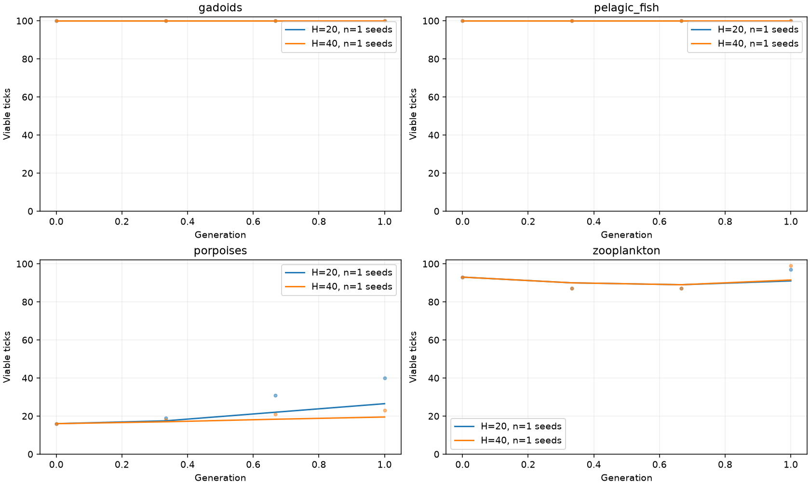
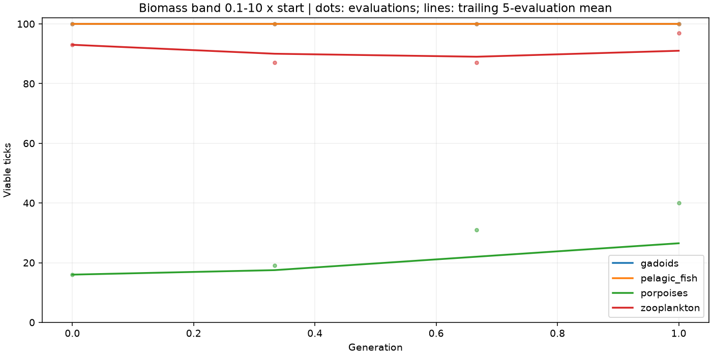
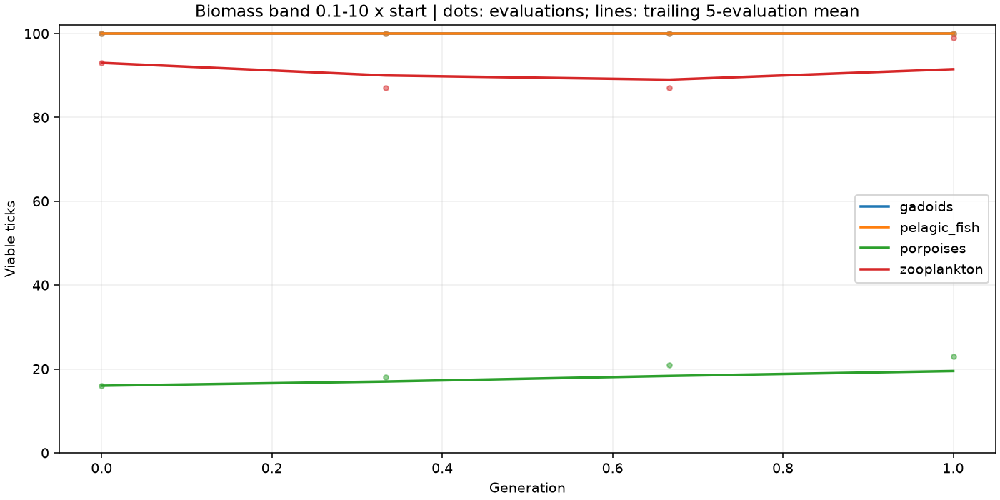

1 generations x 3 updates; progress cap 100 ticks; biomass band 0.1-10 x start; eval seed 20260530.
Dots: individual evaluations at 50% opacity. Lines: trailing 5-evaluation means. Comparison lines first average matching checkpoints across participating training seeds. Partial runs are shown but excluded from aggregate summaries. Startup windows use fewer samples. Scores at the cap are censored, not proof of survival beyond it. This is one fixed evaluation world, not a generalization test. Equal generations do not mean equal compute.
| name | status | updates | seconds | error |
|---|---|---|---|---|
| rollout-20_seed-0 | complete | 3 | 3.47 | |
| rollout-40_seed-0 | complete | 3 | 3.79 |

Mean and population standard deviation across seeds of each run's last 5 evaluations; not a confidence interval. Best single scores are not used to rank runs.
| species | rollout | completed_seeds | mean | std |
|---|---|---|---|---|
| gadoids | 20 | 1 | 100.00 | 0.00 |
| gadoids | 40 | 1 | 100.00 | 0.00 |
| pelagic_fish | 20 | 1 | 100.00 | 0.00 |
| pelagic_fish | 40 | 1 | 100.00 | 0.00 |
| porpoises | 20 | 1 | 26.50 | 0.00 |
| porpoises | 40 | 1 | 19.50 | 0.00 |
| zooplankton | 20 | 1 | 91.00 | 0.00 |
| zooplankton | 40 | 1 | 91.50 | 0.00 |
| run | species | final | last_window_mean | best | tail_cap_fraction | candidate_world_ticks |
|---|---|---|---|---|---|---|
| rollout-20_seed-0 | gadoids | 100 | 100.00 | 100 | 1.00 | 240 |
| rollout-20_seed-0 | pelagic_fish | 100 | 100.00 | 100 | 1.00 | 240 |
| rollout-20_seed-0 | porpoises | 40 | 26.50 | 40 | 0.00 | 240 |
| rollout-20_seed-0 | zooplankton | 97 | 91.00 | 97 | 0.00 | 240 |
| rollout-40_seed-0 | gadoids | 100 | 100.00 | 100 | 1.00 | 480 |
| rollout-40_seed-0 | pelagic_fish | 100 | 100.00 | 100 | 1.00 | 480 |
| rollout-40_seed-0 | porpoises | 23 | 19.50 | 23 | 0.00 | 480 |
| rollout-40_seed-0 | zooplankton | 99 | 91.50 | 99 | 0.00 | 480 |

